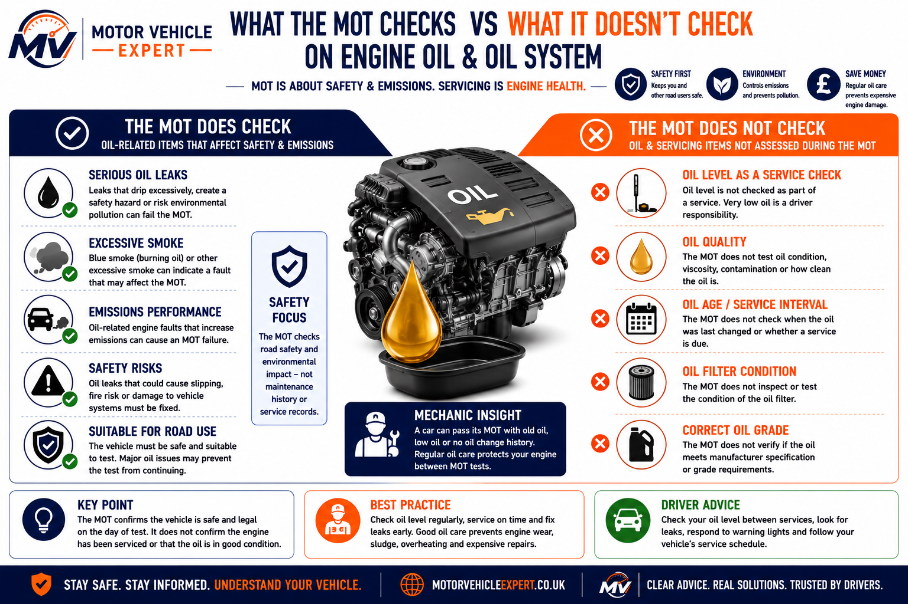
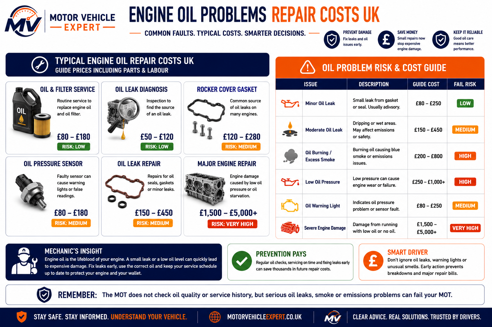

Engine Oil Condition
Not CheckedThe MOT does not assess engine oil quality, oil age, service intervals, oil grade or whether the oil has recently been changed.
No. An MOT does not check engine oil in the same way a service does. The tester does not assess oil age, oil quality, service intervals, oil filter condition or whether the correct oil grade has been used.
However, oil-related faults can still affect an MOT if they create a safety, environmental or emissions concern. Serious oil leaks, excessive smoke, oil dripping onto hot components and warning lights should always be investigated before the test.
A valid MOT does not prove the engine oil is clean, fresh or the correct grade. Engine oil is mainly a servicing issue, but serious leaks, smoke, emissions problems or oil pressure warnings can become safety concerns.
This guide is written for UK drivers who want a clear answer before an MOT test. It explains what the MOT does and does not check around engine oil, when oil leaks become a safety or emissions concern, and why passing an MOT should never be treated as proof that the engine has been serviced correctly.
The MOT does not assess engine oil quality, oil age, service intervals, oil grade or whether the oil has recently been changed.
Leaks that create a safety risk, contaminate the road or affect emissions can influence the MOT outcome.
Oil burning that causes excessive exhaust smoke or emissions problems should always be investigated before the MOT.
An oil pressure warning light indicates a potentially serious engine fault and should never be ignored before an MOT.
Costs range from a routine oil service to repairing leaks, replacing sensors or carrying out major engine repairs.
Routine oil changes prevent engine wear and reduce the risk of expensive MOT-related oil leak and emissions problems.
An MOT does not check engine oil as part of routine servicing. It does not assess oil quality, oil level during maintenance, oil filter condition or service history. However, serious oil leaks, excessive blue smoke, emissions failures and oil-related safety concerns can all become relevant during the inspection.
No. An MOT does not inspect engine oil in the same way as a routine service. Testers do not assess oil quality, oil age, oil viscosity, service intervals, oil filter condition or whether the correct manufacturer-approved oil has been used.
The purpose of an MOT is to confirm that a vehicle meets minimum legal standards for road safety and environmental performance on the day of the inspection—not to verify that scheduled servicing has been carried out.
Oil-related problems can still become relevant if they create a safety or emissions concern. Serious oil leaks, excessive blue exhaust smoke, oil contamination or warning lights should always be investigated before presenting the vehicle for an MOT.
One of the biggest misconceptions among drivers is that a fresh MOT proves the engine is in good condition. In reality, an engine can pass the MOT while running on old oil, overdue servicing or a neglected maintenance schedule if no faults affecting safety or emissions are present.
Regular oil and filter changes remain one of the most important maintenance tasks for protecting the engine, turbocharger and timing components. Ignoring servicing may not fail today's MOT, but it can dramatically increase the likelihood of expensive repairs later.
The MOT does not service the engine or judge whether the oil is fresh, but the tester can still identify visible oil-related defects that affect safety, emissions or roadworthiness.
The MOT does not check oil quality, oil age, service intervals or oil filter condition. It does, however, consider serious oil leaks, excessive smoke, emissions concerns and visible defects that may make the vehicle unsafe or unsuitable to test.
Oil leaks may be recorded depending on severity, location, dripping and whether they create a safety or environmental risk.
Burning oil can create blue smoke and emissions concerns, which may affect the MOT result.
Oil burning, poor combustion or engine faults can contribute to emissions failures.
An oil pressure warning can indicate serious engine risk and should be investigated immediately.
Oil contamination near brakes, tyres, steering parts or hot exhaust components can create serious safety risks.
A leak that drips significantly may be treated more seriously than light misting or staining.

The diagram separates MOT roadworthiness checks from engine oil servicing. The MOT may consider serious leaks, excessive smoke, emissions issues and safety hazards. It does not assess whether the oil is fresh, whether the oil filter has been changed or whether the correct oil grade has been used.
A clean MOT does not mean the engine oil is healthy. Many engines pass the MOT with overdue oil changes, dirty oil or poor service history. Treat the MOT as a safety inspection and oil servicing as essential engine protection.
These oil-related items are important for engine health and long-term reliability, but they are not normally checked as part of the MOT in the same way they would be during a service.
A vehicle can pass its MOT with old oil, dirty oil, an overdue oil service or no oil service record, provided no serious leak, smoke, emissions issue or safety defect is present during the inspection.
The MOT does not assess whether the engine oil is clean, dirty, degraded or contaminated.
The tester does not check when the oil and filter were last replaced or whether servicing is overdue.
Oil filter replacement history is not inspected during an MOT.
The MOT does not confirm whether the engine contains the correct manufacturer-approved oil specification.
Internal wear to bearings, piston rings, timing chains or turbo components is not measured during the MOT.
The tester does not measure how much oil the engine uses between services.
A passed MOT does not mean the engine is reliable, well-serviced or protected from future oil-related failure.
The MOT does not require proof of oil changes, garage invoices or a stamped service book.
Oil servicing remains essential maintenance even though it is not directly checked during the MOT.
Do not treat an MOT pass as proof that the engine oil is healthy. Oil protects bearings, timing components, turbochargers and internal engine parts. Skipped oil services may not fail the MOT today, but they can create expensive engine damage later.
Yes. Oil leaks are one of the main reasons engine oil becomes relevant during an MOT. While the MOT does not inspect oil quality or servicing, it does assess whether an oil leak creates a safety, environmental or roadworthiness concern.
Not every oil leak fails an MOT. Light oil staining or minor seepage is often less serious than heavy dripping, contamination of braking components or oil leaking onto hot exhaust parts.
Light staining around gaskets or seals is often recorded as an advisory if it presents little immediate risk.
Heavy oil leaks that drip excessively or create safety or environmental hazards are much more likely to affect the MOT result.
Oil contaminating braking components, tyres or steering parts should always be repaired before the MOT.
Oil leaking onto hot exhaust components can create smoke, unpleasant smells and, in severe cases, a fire risk.
Excessive oil dripping can contaminate the road surface and increase environmental concerns during the inspection.
Common sources include rocker cover gaskets, sump gaskets, crankshaft seals, turbo oil lines and oil filter housings.
Many engines develop slight oil sweating as they age, particularly around gaskets and seals. The MOT is far more concerned with leaks that create genuine safety or environmental risks than with light staining. Fixing a small leak early is usually much cheaper than waiting until oil loss damages the engine or contaminates other components.
An oil warning light should never be ignored. It may indicate low oil pressure, low oil level, a faulty sensor or an electrical circuit issue depending on the vehicle. Even if the MOT is not a full engine service, an oil pressure warning can make the vehicle unsafe to run.
If the red oil pressure warning light appears, stop safely and investigate before continuing to drive. Running an engine with low oil pressure can cause serious internal damage very quickly.
A red oil pressure warning may indicate low oil pressure. Do not treat it like a routine service reminder.
Oil Warning Light Guide →Some vehicles use separate oil level warnings. Check the dipstick or vehicle display and top up correctly if safe to do so.
A warning can be caused by a faulty sensor or wiring issue, but never assume this until oil pressure and level have been checked.
Oil-related engine faults can cause smoke, misfires, poor running or emissions problems that may affect MOT results.
Engine Light MOT Guide →Blue smoke often points to oil burning and can become an MOT concern if smoke or emissions are excessive.
Continuing to drive with low oil pressure can damage bearings, timing chains, turbochargers and internal engine components.
Oil warning lights are different from service reminders. A service reminder tells you maintenance is due; an oil pressure warning can mean the engine is not being lubricated properly. Always check oil level, leaks and pressure faults before presenting the vehicle for an MOT or continuing to drive.
Engine oil itself is not tested like a service item, but oil-related defects can become serious when they affect safety, emissions, visibility, the environment or the ability to run the vehicle safely during inspection.
Old oil and dirty oil are service issues. Heavy oil leaks, blue smoke, oil warning lights and oil contamination on safety components are roadworthiness concerns.
Oil age and oil quality are not checked directly during the MOT, but maintenance should still be kept up to date.
Light oil staining may be recorded as an advisory if it is not serious enough to affect safety.
Significant dripping, contamination or safety risk can make an oil leak serious enough to affect the MOT result.
| Oil issue | Direct MOT fail? | Why it matters | Best action |
|---|---|---|---|
| Old engine oil | No | Oil age is not checked as part of the MOT. | Service the vehicle on schedule. |
| Dirty or degraded oil | No | Oil quality is not tested during the MOT. | Change the oil and filter. |
| Low oil level | Not usually a test item | Can damage the engine and trigger warnings. | Check level before driving. |
| Minor oil misting | Usually advisory | May not be serious enough to fail. | Monitor and repair the source. |
| Significant oil leak | Possible | May create safety or environmental risk. | Repair before MOT. |
| Oil dripping onto exhaust | Possible | Can create smoke, smell or fire risk. | Repair immediately. |
| Oil warning light | Serious concern | May indicate low oil pressure or engine risk. | Stop safely and diagnose. |
| Blue smoke from exhaust | Possible | May indicate oil burning and emissions issues. | Diagnose oil consumption or engine wear. |
The MOT does not judge whether the engine has been serviced properly, but it can expose the results of neglect. Oil leaks, smoke, warning lights and emissions problems often start as maintenance issues before becoming MOT concerns.
Before an MOT, do not treat engine oil as just a servicing detail. Old oil may not fail the test directly, but oil leaks, warning lights, blue smoke and burning smells can all point to problems that should be fixed before test day.
Check oil level, visible leaks, warning lights and smoke before the MOT. If the oil warning light appears or oil is dripping onto the exhaust, brakes or tyres, stop using the vehicle and arrange diagnosis.
A car can pass its MOT even when it needs an oil service. That does not make it safe to ignore maintenance.
An MOT pass does not confirm that the engine oil, oil filter or service schedule is up to date.
Oil dripping onto the road, exhaust, brakes or tyres should always be inspected before the test.
Oil pressure warnings can indicate serious internal engine risk and should never be ignored.
The best pre-MOT oil check takes less than ten minutes: check the dipstick, look underneath for fresh drips, watch for blue smoke and confirm no oil warning light appears. These simple checks can prevent a minor leak or low-oil issue becoming an expensive engine repair.
Oil-related repair costs depend on whether the vehicle only needs routine servicing, a minor leak repair, an oil pressure sensor, gasket replacement or deeper engine diagnosis. Fixing oil problems early is usually much cheaper than repairing engine damage caused by low oil pressure or neglect.
Do not assume every oil leak means major engine damage. Many leaks come from gaskets, seals, sump plugs, oil filter housings or rocker covers. However, oil pressure warnings and heavy leaks should always be treated urgently.
Routine oil and filter servicing is usually far cheaper than repairing damage caused by neglected oil changes.
Leaks from rocker cover gaskets, sump gaskets, filter housings or seals vary depending on access and labour time.
Oil pressure problems can become expensive quickly if the engine is run while starved of lubrication.

The repair-cost diagram separates routine maintenance from higher-risk oil faults. Oil and filter changes, leak diagnosis and minor gasket repairs are usually far cheaper than major engine damage caused by low oil pressure, heavy oil loss or continued driving with warning lights.
The main lesson is to repair small leaks early and never ignore an oil pressure warning. A minor oil leak may be manageable, but running an engine without proper lubrication can turn a simple repair into a major engine bill.
| Work | Typical UK Cost | Priority | Why It Matters |
|---|---|---|---|
| Oil and filter change | £80–£200+ | Routine service | Protects engine, turbo and timing components. |
| Oil leak diagnosis | £40–£120 | Best first step | Confirms whether the leak is minor, serious or safety-related. |
| Rocker cover gasket | £120–£400+ | Medium | Common source of oil seepage and burning oil smells. |
| Sump gasket or sump repair | £150–£600+ | Medium | Can cause visible dripping underneath the vehicle. |
| Oil pressure sensor | £80–£250+ | Urgent diagnosis | Can trigger oil pressure warnings, but pressure must be confirmed first. |
| Major oil pressure fault | £500–£3,000+ | High risk | May involve oil pump, bearings, timing components or internal engine damage. |
Do not continue driving with an oil pressure warning, heavy oil loss or oil dripping onto hot exhaust components. The repair bill can rise quickly if the engine is run without proper lubrication.
The cheapest oil repair is usually the one caught early. A small gasket leak, low oil level or overdue service is manageable. Ignoring oil pressure warnings, blue smoke or heavy leaks can lead to major engine damage that costs many times more than preventive maintenance.
Clear answers to common UK driver questions about engine oil, oil leaks, oil warning lights, servicing, smoke and MOT inspections.
No. The MOT does not check engine oil quality, oil age, oil grade, oil service interval or whether the oil filter has been replaced. It is not a service inspection.
Oil level is not normally checked as a routine service item during an MOT. However, very low oil, oil pressure warnings or visible oil-related problems should be investigated before the test.
Yes. A serious oil leak can fail an MOT if it creates a safety risk, environmental concern, heavy dripping or contamination of important components.
Yes. A minor oil leak or light misting may pass and be recorded as an advisory if it is not serious enough to affect safety or roadworthiness.
No. Old oil does not directly fail an MOT because oil age and quality are not tested. However, poor maintenance can lead to leaks, smoke, emissions issues or warning lights.
An oil warning light is a serious concern and should be diagnosed immediately. It may indicate low oil pressure, low oil level or a sensor fault.
Yes, it can. Blue smoke often indicates oil burning, and excessive smoke or emissions problems can affect the MOT result.
An oil change is not required for the MOT, but it is sensible if servicing is overdue, the oil is dirty, the level is low or the vehicle has unknown maintenance history.
No. A valid MOT does not prove the engine oil has been changed, the correct oil has been used or the vehicle has been serviced properly.
Fix serious oil leaks, oil pressure warnings, oil dripping onto hot exhaust parts, blue smoke, emissions issues and any oil contamination near brakes, tyres or safety components.
This guide explains why engine oil is not checked like a service item during an MOT, but why oil leaks, smoke, warning lights and emissions issues can still affect roadworthiness. Use the related guides above for oil leak, warning light and emissions advice.